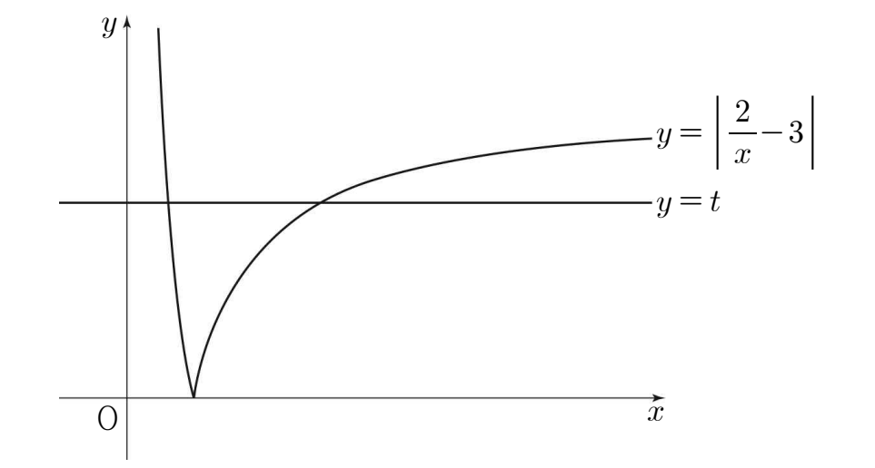

인 실수 에 대하여 함수 의 그래프와 직선 가 만나는 두 점 사이의 거리를 라 할 때, 의 값은? [4점]
① ② ③ ④ ⑤

판단절댓값 안의 부호가 의 부호에 따라 달라지니까 과 으로 나눠 보자. 에서는 가 정의되지 않아.
㉠에서 이니까 에서는 함숫값이 늘 보다 커서 직선 와 만나지 않아.
주의이라 이 양수고, 이어야 도 양수로 정해져. 둘 다 범위 안이라 교점이 되는 거야. ㉠의 이 여기서 쓰여.
㉠에서 이라 이고, 분자가 같으면 분모가 작은 쪽이 더 크니까 야.
두 점이 모두 직선 위에 있으니까 ㉡의 거리는 좌표끼리 빼면 돼.
이라 분자와 분모를 로 약분할 수 있어. 약분하고 나면 분자는 그대로고, 분모 은 에 가까워지는 거야.